화약류관리기사 (2009-03-01 기출문제)
1과목: 일반화약학
1. 질산에스테르 화합물이 아닌 것은?
- 펜트리트
- 니트로글리세린
- 니트로셀룰로오스
- 테트릴
(정답률: 90%)

2. 다음 중 헥소겐의 용도가 아닌 것은?
- 전폭약
- 공업뇌관의 첨장약
- 도화선의 심약
- 도폭선의 심약
(정답률: 알수없음)
3. 니트로글리콜에 대한 설명 중 틀린 것은?
- 뇌관에 예민하다.
- 니트로글리세린보다 휘발성이 크다.
- 니트로글리세린보다 응고점이 높다.
- 독성이 있다.
(정답률: 67%)
4. 다음 중 기폭약인 것은?
- RDX
- DDNP
- DNN
- PETN
(정답률: 82%)
5. 한국산업규격에서 정한 8호 전기뇌관의 품지시험 항목이 아닌 것은?
- 내수시험
- 점화전류시험
- 내정전기시험
- 납기둥시험
(정답률: 알수없음)
6. 동일한 높이에서 10회 연속적으로 추를 떨어뜨려 폭약의 충격에 대한 감도를 반복 시험을 했을 때의 임계 폭점(Critical point of explosion)은 어떤 때를 기준으로 정하는가?
- 폭발과 불폭이 각각 50%일 때
- 10회 완전 폭발할 때
- 10회 완전 불폭발할 때
- 폭발과 불폭에 관계없이 정함
(정답률: 92%)
7. 니트로글리세린 100g이 완전폭발하였을 경우 산소의 과부족량은 얼마인가? (단, 질소의 원자량은 14이다.)
- -3.52g
- -1.76g
- +1.76g
- +3.52g
(정답률: 90%)
8. 나산식 반응기(Nathan Process)에서 니트로글리세린의 니트로화 반응 시 반응 온도를 유지하기 위해 사용하는 것은?
- 염산
- 온수
- 브라인
- 스팀
(정답률: 60%)
9. 질산암모늄 유제폭약(ANFO)의 표준 배합비율은?
- NH4NO3:경유=70:30
- NH4NO3:경유=82:18
- NH4NO3:경유=86:14
- NH4NO3:경유=94:6
(정답률: 알수없음)
10. 다음 중 화약류의 자연분해 및 폭발의 원인에 가장 가까운 것은?
- 온도의 하강
- 온도의 상승
- 농도의 상승
- 농도의 저하
(정답률: 알수없음)
11. 순폭시험에서 순폭도를 옳게 설명한 것은?
- 순폭거리를 약포 지름으로 나눈 것으로 표시한다.
- 단위는 cm로 표시한다.
- 순폭거리에서 불폭거리를 뺀 값으로 표시한다.
- 단위는 cm2로 표시한다.
(정답률: 알수없음)
12. 니트로글리콜 제조에 사용되는 원료물질에 해당하는 것은?
- HO-CH=CH-OH
- CH3-CH2-CH2OH
- CH3-CH2-CH2-CH3
- HO-CH2-CH2OH
(정답률: 55%)
13. 8호 전기뇌관에 관한 설명으로 옳은 것은?
- 관체의 재질로 구리, 알루미늄을 사용할 수 없다.
- 점화약 점화 후 뇌관이 폭발할 때까지의 시간을 연소속도라 한다.
- 납판시험에서 두께 4mm의 납판을 관통해야 한다.
- 0.25A의 직류 전류에서 발화해야 한다.
(정답률: 93%)
14. 흑색화약 제조에 해당하는 혼화 공정으로 유황과 목탄을 혼합하기 때문에 위험성이 상대적으로 적은 것은?
- 1미혼합
- 2미혼합
- 3미혼합
- 4미혼합
(정답률: 알수없음)
15. 니트로글리세린 1kg이 완전 폭발할 때 발생하는 가스의 부피를 표준상태를 기준으로 구하면 약 몇 L인가? (단, 질소의 원자량은 14이다.)
- 615
- 715
- 815
- 915
(정답률: 80%)
16. 다음 중 화약류의 안정도 시험을 하려면 어떠한 시험방법을 택해야 하는가?
- 마찰시험
- 낙추시험
- 내열시험
- 충격시험
(정답률: 알수없음)
17. 혼합다이너마이트의 일종으로 질산나트륨에 니트로글리세린을 흡수시키고, 황, 목분, 탄산칼슘 등을 혼합한 것은?
- 스트레이트 다이너마이트
- 젤라틴 다이너마이트
- 암모니아 다이너마이트
- 질산암모늄 다이너마이트
(정답률: 47%)
18. 전기뇌관 2발을 직렬로 연결하여 제발발 할 때는 최소 몇 V이상의 전압이 필요한가? (단, 뇌관 1개의 저항 1.4Ω, 단선 1m 저항 0.02Ω, 단선의 총연장은 100m, 발파기의 내부저항은 0Ω, 소요전류는2A이다.)
- 9.6
- 12.4
- 24.5
- 39.0
(정답률: 알수없음)
19. 피크린산(picric acid)을 저장하거나 사용할 때 금속물과 직접 접촉하는 것을 피하는 가장 큰 이유는?
- 금속 용기를 부식시키므로
- 중금속과 반응하여 유해가스가 발생하므로
- 화약 자체가 둔화되므로
- 금속과 화합하여 예민한 화합물이 되므로
(정답률: 알수없음)
20. 니트로화합물에 대한 설명으로 옳지 않은 것은?
- 방향족 니트로화합물은 화약류로서 중요하다.
- 니트로기가 3개 결합된 화합물은 강한 폭발성을 가진다.
- 펜트리트는 방향족 니트로화합물이다.
- TNT는 물에는 녹지 않으며, 아세톤, 벤젠, 톨루엔에 녹는다.
(정답률: 알수없음)
2과목: 발파공학
21. 저항 1.4[Ω]의 전기뇌관 20개를 다음과 같이 결선하여 제발발파하려면 최소 몇 [V]의 전압을 필요로 하는가? (단, 발파모선은 BS 18번선으로 총연장 100m(단선 1m의 저항 0.02[Ω]), 발파기의 내부저항은 0, 소요전류는 2[A]로 한다.)
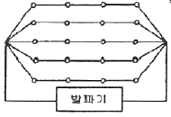
- 22.8 [V]
- 27.2 [V]
- 31.2 [V]
- 60.0 [V]
(정답률: 알수없음)
22. 다단식 발파기(Sequential Blasting Machine)를 이용한 발파에 대한 설명으로 틀린 것은?
- 제어발파가 가능하며, 발파진동 및 소음을 줄일 수 있다.
- 무한단차를 얻을 수 있다.
- 결선 후 연결여부 및 저항을 손쉽게 확인할 수 있다.
- 누설전류가 있는 곳에서는 사용할 수 없다.
(정답률: 알수없음)
23. 벤치발파에서 작은 파쇄입도를 얻기 위한 방법으로 옳은 것은?
- 최소저항선을 천공간격보다 크게 한다.
- 공당 장약량을 감소시킨다.
- 1회당 1열씩 순발발파한다.
- 동일 암석체적에 대한 천공수를 증가시킨다.
(정답률: 알수없음)
24. 건설생활 진동규제 기준의 진동 레벨이 75dB인 특수건설현장에서 발파작업을 실시하고자 한다. 작업시간이나 진동노출시간을 고려하지 않을 경우 허용진동 속도는? (단, 발파진동의 주파수는 8Hz 이상이며, 연속 정현진동으로 간주한다.)
- 1.85mm/sec
- 2.85mm/sec
- 3.21mm/sec
- 4.21mm/sec
(정답률: 알수없음)
25. 대구경 평행공 심빼기(cylinder cut)에 있어 첫 번째 정방형 심빼기가 완료된 상태는 그림과 같이 나타났다. W1=140mm, B1=W1, C1=210mm, W2=297mm일 때 두 번째 정방형의 장약공에 필요한 주상장약밀도는? (단, 장약공 1개에 대한 장약밀도 임)
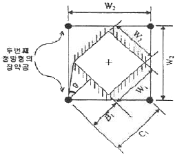
- 0.16kg/m
- 0.21kg/m
- 0.27kg/m
- 0.33kg/m
(정답률: 알수없음)
26. 공저깊이(sub drilling) 1m, 최소저항선 3m, 공간격 4m의 직사각형 패턴으로 천공하여 높이 10m, 길이 28m, 폭 15m의 수직벤치를 절취하려고 한다. 공당 장약량이 30kg라면 이 패턴에 대한 비장약량은?
- 약 3.46kg/m3
- 약 1.25kg/m3
- 약 0.29kg/m3
- 약 0.⑤kg/m3
(정답률: 알수없음)
27. 구조물 발파해체공법이 기계해체공법에 비해 유리한 장점이 아닌 것은?
- 지속적인 소음 및 분진의 발생이 없다.
- 시공 대상 구조물이 다양하다.
- 대상 구조물 주변의 여유공간이 필요하지 않다.
- 첨단기술을 이용한 공법으로 볼거리를 제공한다.
(정답률: 10%)
28. 비전기식 뇌관을 사용하여 발파를 하고자 한다. 다음 설명 중 옳은 것은?
- 뇌관 내부에는 연시장치가 없어, 튜브 길이를 변화함으로써 지발발파를 할 수 있다.
- 비전기식 뇌관 튜브 연결은 항상 점화순서의 주 방향과 반대방향으로 연결해야 한다.
- 1개의 번치 콘넥터(Bunch Connector)당 최대 20개 튜브를 연결할 수 있다.
- 비전기식 뇌관의 튜브는 불로 태우면 폭발하므로 화염에 주의하여야 한다.
(정답률: 알수없음)
29. 다음은 Liiiy의 발파지수(BI. Blastibility Index)를 나타내는 식이다. 이 식에서 JPS가 의미하는 것은?
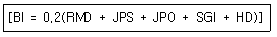
- 절리의 수
- 절리의 간격
- 절리의 방향
- 절리의 거칠기
(정답률: 알수없음)
30. 응력파의 전파특성에 관한 설명 중 옳은 것은?
- 어떤 물체에 급격히 하중을 가할 경우 그 물체에 생기는 응력이나 변형은 즉시 그 물체의 모든 부분에 전달된다.
- 충격하중을 받은 물체 내에서는 통상 가로파와 세로파의 2종류의 응력파가 발생된다.
- 세로파인 경우 그 세로파 내의 입자운동은 진행방향과 직각방향으로 전단변형이 일어난다.
- 가로파인 경우 그 가로파 내의 입자운동은 진행방향과 평행이 되는 방향으로 단순한 신축의 변형이 발생된다.
(정답률: 10%)
31. 시험발파를 실시하여 얻은 지반진동속도 자료를 회귀분석한 결과 중앙값에 대한 발파진동속도 추정식이 V=1000(D/W1/2)-1.65로 도출되었다. 이 식의 95% 상부신뢰 수준에 대한 식으로 보정하면 얼마정도인가? (단, 식의 표준오차 0.1, 95% 신뢰도와 자유도에 해당하는 t값은 1.96이다.)
- V=1175.33(D/W1/2)-1.65
- V=1570.36(D/W1/2)-1.65
- V=2155.44(D/W1/2)-1.65
- V=2355.54(D/W1/2)-1.65
(정답률: 알수없음)
32. 발파진동의 경감법으로 틀린 것은?
- 터널발파에서 통상의 심빼기 패턴값에 짧은 보조 심빼기를 넣어 먼저 기폭한다.
- 폭속이 낮은 폭약을 사용한다.
- Pre-splitting 발파를 실시하여 파단면을 조성한다.
- 공당 장약량을 감소시키고, 지발당 장약량을 유지시킨다.
(정답률: 알수없음)
33. 전기발파를 실시하였는데 발파 회로의 여기저기에 불발이 되었을 때 불발의 원인과 거리가 먼 것은?
- 발파기의 출력부족
- 결선부가 녹슬어 있는 경우
- 타자제품의 뇌관을 혼용하였을 경우
- 모선과 각선이 단선되어 있는 경우
(정답률: 알수없음)
34. 발파현장 인근에 보안물건으로 인하여 분산장약(Deck charge)을 적용하고자 한다. 발파공내가 건조한 경우와 습윤된 경우의 삽입 전색장은 각각 얼마인가? (단, 천공경 75mm이다.)
- 건조공 450mm, 습윤공 900mm
- 건조공 450mm, 습윤공 1200mm
- 건조공 900mm, 습윤공 450mm
- 건조공 1200mm, 습윤공 450mm
(정답률: 알수없음)
35. 균질한 발파암반 경계면을 매끄럽게 하기 위하여 정상적인 마무리발파(trim blasting)를 실시하려 한다. 암반에 직경 45mm 비트를 사용하여 천공할 경우 저항선은 얼마나 되겠는가? (단, 단위길이당 장약량은 168.75g이다.)
- 93.6cm
- 86.3cm
- 72.2cm
- 65.2cm
(정답률: 0%)
36. 다음 수중천공발파 설계 중 틀린 것은?
- 장약작업의 불확실성을 고려하여 경사공의 경우 수직공보다 0.1kg/m3의 비장약량을 증가시킨다.
- 진흙으로 암반이 덮혀 있는 경우, 진흙층의 두께 m당 0.02kg/m3의 비장약량을 증가시킨다.
- 암석층을 보정하기 위해서 계단높이 m당 0.03kg/m3의 비장약량을 증가시킨다.
- 수압을 보정하기 위해서 수심 m당 0.01kg/m3의 비장약량을 증가시킨다.
(정답률: 알수없음)
37. 발파에 의한 폭풍압(air blast)의 생성원인 중 공기압력파(air pressure pulse, APP)의 특성을 설명한 것으로 맞는 것은?
- 계측지점에 가장 먼저 도달하는 압력파이다.
- 지반진동에 의해 공기로 전달되는 파이다.
- 발파지점에서의 직접적인 암반의 변위에 의한 파이다.
- 파쇄된 암반의 틈을 통해서 분출되는 가스에 의한 파이다.
(정답률: 알수없음)
38. 다음 중 제안자에 따른 누두지수 함수의 연결로 틀린 것은?
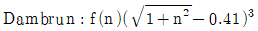
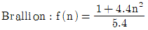
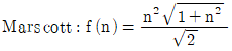
- Hauser:f(n)=n3
(정답률: 알수없음)
39. 폭약이 폭발하면 그 폭굉에 따라서 응력파가 발생하고, 이 응력파가 전파되어 자유면에 도달되면 이것이 다시 반사되어 암반속으로 되돌아 간다. 이 때 암석은 압축강도보다 인장강도에 약하므로 입사할 때의 압력파에는 많이 파괴되지 않아도 반사할 때의 인장파에는 많이 파괴된다. 이와 같은 현상을 무엇이라 하는가?
- 샤프만-주게효과(Chapman-Jouguet Effect)
- 공극효과(Channel Effect)
- 홉킵슨효과(Hopkinson Effect)
- 스팔링효과(Spalling Effect)
(정답률: 알수없음)
40. 백브레이크(Back break)와 오버행(Over hang)에 대한 설명으로 틀린 것은?
- 계단발파에서 벤치높이가 최소저항선보다 극히 작을 때 백브레이크가 발생한다.
- 계단발파에서 벤치높이가 최소저항선보다 극히 클 때 백브레이크가 발생한다.
- 계단발파에서 발파 충격으로 내부 암석에 균열이 생기는 현상을 백브레이크라고 한다.
- 계단발파에서 상부를 발파하여 하부의 암석을 암석의 중량으로 파괴시킬 때 하부의 암서이 파괴되지 않고 수직 이상의 급각도로 남는 상태를 오버행이라고 한다.
(정답률: 알수없음)
3과목: 암석역학
41. 그리피스(Griffith) 파괴이론에 의하면 암석의 일축압축강도는 일축인장강도의 대략 몇 배인가 ?
- 1배
- 2배
- 4배
- 8배
(정답률: 알수없음)
42. 공내팽창계(borehole dilatometer)를 이용하여 직경 8cm의 시추공에 대해 현지 변형시험을 실시한 결과 10MPa의 압력 변화에서 시추공 반경 증가량이 0.004cm인 경우 암반의 변형계수는 얼마인가? (단, 암반의 포아송비는 0.2)
- 6GPa
- 12GPa
- 24GPa
- 36GPa
(정답률: 알수없음)
43. RMR 분류법에 대한 설명으로 틀린 것은?
- 갱도의 자립시간을 평가할 수 있다.
- 대상 암반이 2개 군의 불연속면을 가지고 있는 것으로 가정하였다.
- 기초 RMR을 평가하기 위한 분류 요소는 5개이다.
- 기초 RMR을 평가하기 위한 분류 요소 중 배점이 가장 높은 것은 불연속면 상태이다.
(정답률: 알수없음)
44. 정수압 P가 작용하느 암반 내에 원형공동을 굴착하였을 때 공동벽면에 집중되는 접선방향응력(σa)의 크기는? (단, 암반은 균질, 등방성이며 탄성적이다.)
- P
- 2P
- 3P
- 4P
(정답률: 알수없음)
45. 암반분류법인 Q값을 이용한 터널의 지보랑 산정을 위해서는 터널의 등가크기(equivalent dimension)가 계산되어야 하고 이를 위해서는 터널의 ESR(Excavation Support Ratio) 값이 선정되어야 한다. 다음 지하 암반시설들 중 ESR 값이 가장 높은 것은?
- 지하 원자력 발전소
- 일시적인 광산 갱도
- 지하 식품저장시설
- 수력발전소의 수로터널
(정답률: 알수없음)
46. 현지암반의 초기응력측정법 중수압파쇄법의특징이 아닌 것은?
- 오버코어링(overcoring)작업이 불필요하다.
- 심도가 깊은 곳에도 적용이 가능하다.
- 암석의 탄성계수가 불필요하다.
- 시추공내의 생성균열을 측정할 필요가 없다.
(정답률: 10%)
47. 절리면에 대한 직접전단시험을 통해 얻을 수 있는 자료가 아닌 것은?
- 전단강성
- 팽창각
- 마찰각
- 영률
(정답률: 알수없음)
48. 직경 d인 원주형 시험편에 대한 4점 휨강도(σb)를 구하는 식으로 맞는 것은? (단, P:작용하중, L:양 지점간 거리)
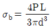
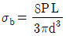
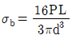
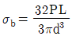
(정답률: 20%)
49. 암석의 강도를 측정하는 방법 중 점하중강도시험에 대한 설명으로 틀린 것은?
- 점하중강도 시험은 현장 및 실험실에서 시험이 가능하다.
- 점하중강도 시험은 암석의 여러 가지 물성과 상관관계를 가지는 지표를 구하는 시험으로서 시험이 간편하다.
- 점하중강도시험은 주로 단축압축강도를 구하는데 이용되며 이론적으로는 전단강도와 더 관련이 깊다.
- 강도시험은 동일지역에 존재하는 다양한 크기의 시료에 대해 10회 정도 실시하며, 점하중강도지수는 그 평균으로 구한다.
(정답률: 0%)
50. 지반을 개개의 강성 블록으로 모델링하고 불연속면에서의 변위가 블록자체의 변형보다 대단히 큰 경우효과적으로 적용할 수 있는 수치해석법으로 알맞은 것은?
- 유한요소법
- 유한차분법
- 개별요소법
- 경계요소법
(정답률: 알수없음)
51. 직각 변형률 로젯(strain rosette)를 사용하여 측정한 변형률이 각각 ɛ0=8×10-3, ɛ45=3×10-3, ɛ90=-4×10-3 일 때 전단변형률(γxy)은?
- 2×10-3
- 4×10-3
- 6×10-3
- 8×10-3
(정답률: 알수없음)
52. 평면응력상태에서 σx=55MPa, σy=45MPa, ν=0.25, E=5GPa일 때 εx+εy+εz 값은 얼마인가?
- 0.01
- 0.02
- 0.03
- 0.04
(정답률: 알수없음)
53. 기본마찰각이 30°, JRC=15, JCS=20MPa인 절리면에서 2MPa의 수직응력이 작용할 경우 전단강도는? (단, Barton의 제안식을 사용)
- 1.5MPa
- 2.0MPa
- 2.5MPa
- 3.0MPa
(정답률: 29%)
54. 절리 간격이 100cm인 수평절리군으로 이루어진 암반을 평면이방성 등가연속체(equivalent transeversely isotropic continuum)로 고려하는 경우 절리의 수직한 방향으로서의 탄성계수는 얼마인가? (단, 절리의 수직강성은 5GPa/m, 신선암의 탄성계수는 20GPa이다.)
- 4GPa
- 8GPa
- 15GPa
- 25GPa
(정답률: 알수없음)
55. 다음 그림은 어떤 사면 파괴 형태를 나타낸 것인가?
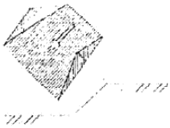
- 원호파괴
- 평면파괴
- 쐐기파괴
- 전도파괴
(정답률: 10%)
56. 변형과 힘에 관한 기본적인 법칙에 완전히 따르는 가상의 물체를 이상물체(ideal body)라고 하는데, 이와 같은 이상물체에 관한 다음 설명 중 틀린 것은?
- Newton 유체는 일정한 힘에 대해 일정한 속도로 유동하게 되며 그 관계는 직선으로 나타난다.
- 외력의 제거와 동시에 변형이 완전히 소실되는 것을 완전 탄성이라 한다.
- Hooke 고체에서 변형률과 응력은 일정한 비례 관계로 표현된다.
- 완전 소성체의 모형은 대쉬포트(deshpot)로 나타낼 수 있다.
(정답률: 10%)
57. 암석에 대한 전형적인 크리프 거동 그래프에서 2차 크리프 구간에서의 크리프 변형률(ε)과 경과시간(t) 간의 관계로 알맞은 것은? (단, ∝는 비례관계를 나타낸다.)
- ε ∝ logt
- ε ∝ e1
- ε ∝ t
- ε ∝ t2
(정답률: 0%)
58. Mohr-Coulomb의 파괴식물 (σ-τ) 좌표계에서 도시한 결과 점착력(c)이 10MPa, 내부마찰각(ø)이 45°라면 주응력공간(σ1-σ3) 좌표계에 도시하였을 때의 일축압축강도는 얼마인가?
- 10.28MPa
- 28.28MPa
- 38.28MPa
- 48.28MPa
(정답률: 0%)
59. 다음 중 중간주응력의 영향을 고려하는 파괴이론은?
- Griffith 파괴이론
- Druker-Prager 파괴이론
- Mohr-Coulomb 파괴이론
- Tresca 파괴이론
(정답률: 알수없음)
60. 다음 중 완전 탄성체의 성질이 아닌 것은?
- 응력과 변형률이 선형관계를 이룬다.
- 힘을 가하였다가 제거하면 본래의 변위(형태)로 되돌아온다.
- 일정한 응력이 가해질 때 발생하는 변형량이 시간에 비례한다.
- 영률이 측정방향에 상관없이 일정하다.
(정답률: 알수없음)
4과목: 화약류 안전관리 관계 법규
61. 폭약과 비슷한 파괴적 폭발에 사용될 수 있는 것으로서 대통령령이 정하는 것에 해당하는 것은?
- 과염소산염을 주성분으로 한 폭약
- 디아조디니트로페놀 또는 무수규산 75% 이상을 함유한 폭약
- 면약(질소함량이 10.2% 이상의 것에 한한다.)
- 크롬산납을 주성분으로 한 폭약
(정답률: 28%)
62. 화약류의 폐기와 관련한 설명으로서 옳지 않은 것은?
- 화약류를 폐기하고자 하는 사람은 폐기하고자 하는 곳을 관할하는 경찰서장의 허가를 받아야 한다.
- 화약류의 폐기는 대통령령이 정하는 기술상의 기준에 따라야 한다.
- 경찰서장은 화약류의 폐기 방법 등이 적절하지 않다고 판단되면 폐기중지를 명할 수 있다.
- 화약류의 폐기중지와 관련한 경찰서장의 명령을 위반시 300만원 이하의 과태료에 처한다.
(정답률: 22%)
63. 다음 중 방폭식 구조로 할 수 있는 위험공실에 해당하지 않는 것은?
- 전기뇌관의 위험공실
- 도폭선의 위험공실
- 정체량 200kg 이하의 폭약(기폭약을 제외한다.)의 위험공실
- 정체량 600kg 이하의 폭약(흑색화약을 제외한다.)의 위험공실
(정답률: 0%)
64. 화약류 판매업자가 소지 또는 양수허가를 받지 아니한 사람에게 화약류를 양도했을 경우 행정처분기준은? (단, 2회 위반)
- 1월 효력정지
- 3월 효력정지
- 6월 효력정지
- 면허 취소
(정답률: 알수없음)
65. 1급 화약류저장소에 폭약 10톤을 저장하고자 한다. 저장소 부근에 고압가스충전소가 있을 경우 보안거리는 얼마이상을 유지하여야 하는가?
- 170m 이상
- 190m 이상
- 210m 이상
- 230m 이상
(정답률: 24%)
66. 화약류저장소에 설치하는 피뢰장치의 피뢰도선 및 가공지선의 전극 기준으로 틀린 것은?
- 전극은 피뢰도선마다 1개 이상으로 할 것
- 전극을 땅에 묻을 때에 그 부근에 가스관이 있을 경우에는 그로부터 1미터 이상의 거리를 둘 것
- 전극은 알루미늄판 또는 그 이상의 전도성이 있는 금속으로 할 것
- 전극의 접지저항은 피뢰도선이 1줄인 때에는 10Ω 이하로 할 것
(정답률: 30%)
67. 화약류의 운반기간이 경과한 때의 신고필증의 반납은 누구에게 하는가?
- 방송지를 관할하는 경찰서장
- 도착지를 관할하는 경찰서장
- 발송지를 관할하는 구청장
- 도착지를 관할하는 구청장
(정답률: 30%)
68. 질산에스텔 및 그 성분이 들어 있는 화약으로서 제조일로부터 366일 지났다면 안정도시험은 어떤 시험방법을 택해야 하는가?
- 유리산시험 또는 가열시험
- 유리산시험 또는 내열시험
- 내열시험 또는 가열시험
- 내열시험 또는 발화점시험
(정답률: 30%)
69. 지상 복토식 1급저장소의 위치ㆍ구조 및 설비의 기준에 대한 설명으로 틀린 것은?
- 저장소의 벽은 2중으로 하고, 바깥쪽 벽은 두께 20센티미터 이상의 철근콘크리트로 한다.
- 저장소의 안쪽 벽과 바깥쪽 벽과의 공간에 습기가 차지 아니하도록 방수설비를 한다.
- 저장소의 복토(출입구쪽의 부분은 제외)는 45도 이하의 경사로 하고, 복토의 두께는 3미터 이상으로 한다.
- 마루는 기초에서 30센티미터 이상의 높이로 한다.
(정답률: 알수없음)
70. 간이저장소에 “신관 및 화관”을 저장하고자 한다. 최대저장량으로 맞는 것은?
- 5000개
- 10000개
- 20000개
- 30000개
(정답률: 20%)
71. 총포ㆍ도검ㆍ화약류 등 단속법 시행령에 규정된 보안물건의 구분으로 틀린 것은?
- 제1종 보안물건:학교
- 제2종 보안물건:공원
- 제3종 보안물건:화기취급소
- 제4종 보안물건:지방도
(정답률: 19%)
72. 간이흙둑의 설치 기준에 대한 설명으로 옳지 않은 것은?
- 간이흙둑의 경사는 75도 이하로 하여야 한다.
- 꽃불류저장소에서의 간이흙둑의 높이는 지붕의 높이 이상으로 해야 한다.
- 간이흙둑의 정상의 폭은 60센티미터 이상으로 해야 한다.
- 정상은 빗물이 스며들지 않도록 판자 등으로 씌우거나 잔디를 입힌다.
(정답률: 46%)
73. 화약류관리보안책임자의 선임기준으로 옳지 않은 것은?
- 폭약을 1개월에 30kg씩 4개월에 걸쳐서 사용할 사람은 화약류관리보안책임자를 선임할 필요가 없다.
- 화약류관리보안책임자의 선임은 화약류저장소 4동까지 1인으로 하되, 4동을 초과하는 경우에는 초과하는 1동마다 1인을 추가 선임해야 한다.
- 꽃불류 및 장난감용 꽃불류저장소는 2급 화약류관리보안책임자를 선임해도 된다.
- 연중 40톤 이상의 폭약을 저장하는 화약류저장소에는 1급 화약류관리보안책임자를 선임해야 한다.
(정답률: 30%)
74. 운반신고를 하지 아니하고 운반할 수 있는 화약류의 종류 및 수량으로 맞는 것은?
- 총용뇌관 20만개
- 도폭선 2500m
- 화약 2kg
- 폭발천공기 600개
(정답률: 37%)
75. 화약류관리보안책임자 면허의 취소사유가 아닌 것은?
- 속임수를 쓰거나 그 밖의 옳지 못한 방법으로 면허를 받은 사실이 드러난 때
- 국가기술자격법에 의하여 자격이 취소된 때
- 면허를 다른 사람에게 빌려준 때
- 화약류를 취급함에 있어 고의 또는 과실로 폭발사고를 일으켜 사람을 죽거나 다치게 한 때
(정답률: 28%)
76. 장난감용 꽃불류를 수입하고자 하는 사람은 누구의 허가를 받아야 하는가?
- 경찰서장
- 지방경찰청장
- 경찰청장
- 행정안전부장관
(정답률: 알수없음)
77. 화약류관리보안책임자가 화약류의 취급 전반에 관한 안전상의 감독업무를 위반하였을 때의 벌칙은?
- 5년 이하의 징역 또는 1천만원 이하의 벌금
- 3년 이하의 징역 또는 700만원 이하의 벌금
- 2년 이하의 징역 또는 500만원 이하의 벌금
- 1년 이하의 징역 또는 300만원 이하의 벌금
(정답률: 알수없음)
78. 안정도시험에 사용하는 것 중 행정안전부령이 정하는 것에 속하지 않은 것은?
- 정제활석분
- 표준색지
- 옥도가리전분지
- 적색리트머스시험지
(정답률: 34%)
79. 화약류의 양도ㆍ양수허가신청에 대한 설명 중 틀린 것은?
- 양수허가의 유효기간은 2년을 초과할 수 없다.
- 1회에 허가할 수 있는 화약류의 수량은 화약류 사용계획서에 기재된 그 연도의 1년간의 사용량을 초과할 수 없다.
- 화약류를 양도할 때 양도인은 양수인이 소지하는 화약류 양도ㆍ양수허가증 뒤쪽의 양도인ㆍ양수인 기재란에 소정의 사항을 기재하여야 한다.
- 화약류 양수허가는 반드시 화약류 사용지를 관할하는 경찰서장의 허가를 받아야 한다.
(정답률: 0%)
80. 화약류의 포장기준으로 옳지 않은 것은?
- 화약류는 위장하거나 다른 물건과 혼합 포장하여 소지ㆍ저장ㆍ운반하여서는 안된다.
- 화약류는 그 화약류와 화학작용을 일으키지 아니하는 속포장에 넣은 다음 대통령령이 정하는 겉포장에 넣어야 한다.
- 초유폭약, 함수폭약의 경우는 속포장을 하지 않을 수 있다.
- 속포장 및 겉포장에는 화약류의 종류, 수량, 성능, 제조소명, 제조년월일 등을 기재하여야 한다.(다만, 기재가 곤란한 속포장은 그러지 않아도 된다.)
(정답률: 알수없음)
5과목: 굴착공학
81. 어떤 지반에 대한 토질 시험결과 점착력 c=0.5kg/cm2, 흙의 단위 중량 γ=2.0t/m3일 때, 그 지반에 연직으로 7m를 굴착하였다면 안전율은 얼마인가? (단, 내부마찰각 ø=0이다.)
- 1.43
- 2.52
- 3.21
- 4.56
(정답률: 9%)
82. TBM공법의 장점에 대한 설명으로 틀린 것은?
- 굴착단면의 안정성이 확보된다.
- 암질 변화에 대한 적용성이 뛰어나다.
- 여굴 및 라이닝이 감소된다.
- 노무비가 절감된다.
(정답률: 알수없음)
83. 막장면에 지지코아를 남기고 굴착하는 공법으로서 막장면의 안정이 위협되는 지반조건에 적용하는 굴착공법은?
- 링 커트 공법
- 롱벤치 커트 공법
- 측벽 선진 도갱 공법
- 중력분할 공법
(정답률: 16%)
84. 터널에서 내공변위를 계측함으로써 알 수 있는 사항이 아닌 것은?
- 지보 부재 효과
- 복공 콘크리트 타성시기의 판정
- 록볼트 길이 타당성
- 주변 암반의 안정
(정답률: 19%)
85. 암반내 원형터널을 굴착할 경우 터널천반에서 인장응력이 발생하지 않기 위한 측압계수(K)의 조건은? (단, 암반은 완전탄성체로 가정)
- K≥1/3
- K＜1/3
- K≥1/4
- K＜1/4
(정답률: 0%)
86. 사력층이ㅐ나 모래층의 수위저하나 수압저감을 목적으로 지표로부터 우물을 파고 그 속에 수중 펌프를 설치하여 배수하는 공법은?
- 웰포인트(well point) 공법
- 딮웰(deep well) 공법
- 물빼기 우물
- 물빼기 시추
(정답률: 15%)
87. 에너지 저장시설을 지하에 설치하는 경우 이용되는 지하 특성과 가장 거리가 먼 것은?
- 항습성
- 단열성
- 격리성
- 차광성
(정답률: 알수없음)
88. 전단탄성계수(shear modulus) G=1GPa, 초기지압 Po=1MPa인 암반에 직경 6m의 원형터널을 굴착할 경우 벽면의 반경방향 변위(radial displacement)는? (단, 암반은 완전탄성체로 가정, 측압계수(K)=1)
- 15mm
- 30mm
- 1.5mm
- 3.0mm
(정답률: 0%)
89. 경사방위가 240°이고 경사가 30°인 암반사면을 주향과 경사로 맞게 표현한 것은?
- N30° W, 30° SW
- N60° E, 30° NW
- N30° W, 30° NE
- N60° E, 30° SE
(정답률: 알수없음)
90. 어떤 터널현장에 분포하는 암반에 대해 Q-시스템을 적용한 결과 Q값 8을 얻었다. 절리면의 거칠기를 나타내는 Jr 값은 1.5이었고, 현장에는 3개 절리군(joint set)과 무작위 절리(random joint)가 분포하고 있다. 이 터널천반의 영구지보 압력(permanent support pressure)은?
- 1.33kg/cm2
- 2.67kg/cm2
- 0.33kg/cm2
- 0.67kg/cm2
(정답률: 알수없음)
91. 숏크리트의 습식공법과 건식공법에 대한 설명으로 틀린 것은?
- 습식공법이 건식공법에 비래 리바운드량이 비교적 적다.
- 장거리 압송에는 건식공법이 비교적 유리하다.
- 건식공법은 노들에서 물과 재료를 혼합하기 때문에 숏크리트의 품질관리가 습식공법에 비해 용이하다.
- 청소, 보수의 측면에서 건식공법이 습식공법에 비해 비교적 용이하다.
(정답률: 알수없음)
92. 지하굴착시 기설구조물 바로 아래 또는 부근을 굴착하는 경우 구조물 기초의 지지력이 저하되어 안정이 손상될 우려가 있기 때문에 지반의 개량, 기초보강, 개조 등을 실시하여 구조물의 안전을 도모하고자 할 때 실시하는 공법은?
- 언더피닝 공법
- 트렌치 공법
- 메세르 공법
- 역권 공법
(정답률: 알수없음)
93. 다음 그림에 주어진 사면의 평면파괴(plane failure)가능성을 평가하고자 한다. 예상 파괴면의 경사각은 50°, 점착력 0.1MPa, 마찰각 30°, 파괴면 면적 10m2이고, 예상 파괴면 상부 암괴의 체적은 20m3, 암석의 단위중량은 0.027MN/m3라면 이 사면의 안전율은? (단, 선형 Mohr-Coulomb 파괴기준 적용)
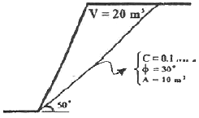
- 0.73
- 3.17
- 0.54
- 2.90
(정답률: 0%)
94. 탄성지반 내 굴착된 원형공동 주변에 발생하는 2차 응력에 대한 설명으로 틀린 것은?
- 초기응력이 커지면 2차응력의 크기도 커진다.
- 포아송비는 2차응력에 영향을 미친다.
- 공동경계에서 반경방향응력은 0이 된다.
- 영률은 2차응력과 관계가 없다.
(정답률: 알수없음)
95. 터널 굴착의 각 단계별 조사항목 중 계획단계에 속하지 않는 것은?
- 실시 설계 검토
- 굴착방식, 공법의 검토
- 2차복공의 검토
- 보조공법, 특수공법의 검토
(정답률: 9%)
96. 터널공사에서는 터널의 안정성을 확보하기 위해서 여러 가지 보조공법을 사용하게 된다. 다음 중 막장의 천반을 안정화시키기 위해서 사용되는 보조공법이 아닌 것은?
- 포아폴링(forepoling) 공법
- 미니 파이프 루프(mini pipe roof) 공법
- 시트 파일(sheel pile) 공법
- 프레슈어 와이어(pressure wire) 공법
(정답률: 알수없음)
97. 다음 지보재의 종류 중 주동보강식 지보재(active reinforcement)에 속하는 것은?
- 숏크리트(shotcrete)
- 강아치(steel arch support)
- 마찰형 록볼트(friction rockbolt)
- 철망(wire mesh)
(정답률: 17%)
98. 터널의 침하 및 하반부의 융기를 포함하여 터널 벽면간 거리의 상대적인 변화량을 의미하는 것은?
- 지중변위
- 내공변위
- 갱내변위
- 막장변위
(정답률: 19%)
99. 다음 암반사면에서 블록 A가 전도만 발생할 수 있는 조건으로 맞는 것은? (단, ø는 마찰각)
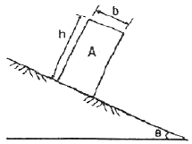
- θ＜Φ, b/h＞tanθ
- θ＞Φ, b/h＞tanθ
- θ＜Φ, b/h＜tanθ
- θ＞Φ, b/h＜tanθ
(정답률: 알수없음)
100. 2개 이상의 가스저장공동이 인접해 있어 가스의 누출을 방지하기 위하여 수평 수벽(water curtain)시설을 설치하는 경우 필요 수압을 적게 하기 위한 방법으로 가장 거리가 먼 것은?
- 수벽공간의 간격을 좁게한다.
- 수벽공과 공동상부와의 간격을 가깝게 한다.
- 공동간의 간격을 넓게 한다.
- 공동의 폭을 크게 한다.
(정답률: 알수없음)